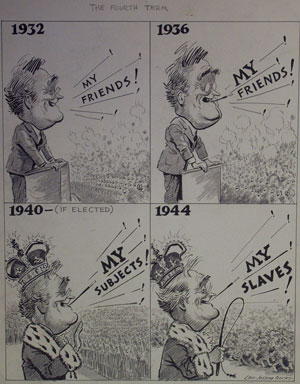
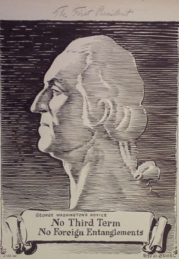

|

|

|
| The Fourth Term by Leo Joseph Roche | The First President by Fred O. Seibel |
After FDR won re-nomination, opponents charged that a third term would imbue him with near-autocratic power. Leo Joseph Roche portrayed FDR as a tyrannical king not subject to any checks of power, fearful this would lead to the enslavement of a free people. In his almost three-dimensional line drawing, Fred O. Seibel pointedly observed that "The First President" not only disavowed a third term, but also warned against foreign entanglements, a reference to the aid FDR provided Britain in the war in Europe.
Previous Next